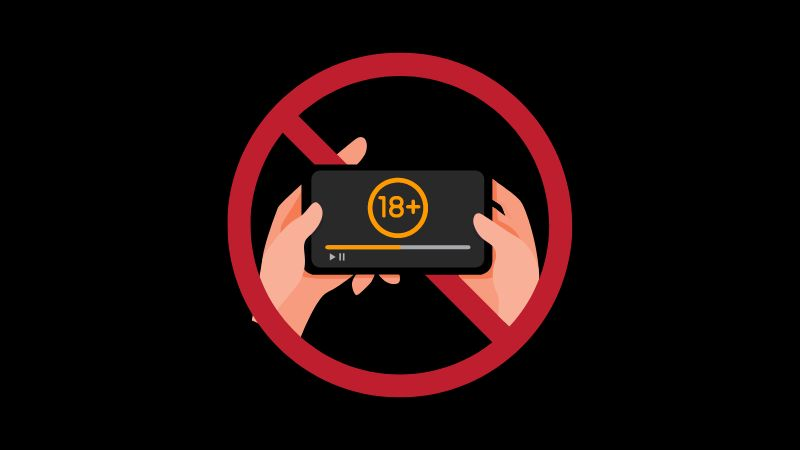

Overview of Porn Addiction
Porn addiction is a form of behavioral addiction characterized by compulsive use of pornographic material, despite negative impacts on life, relationships, and mental health.
Impact on Mental Health and Relationships
Excessive consumption of pornography can lead to issues such as anxiety, depression, and difficulties in relationships, affecting intimacy and trust.
How to Get Help
Support and resources are available for those struggling with porn addiction. Seeking help from professionals and joining support groups can be the first steps toward recovery.